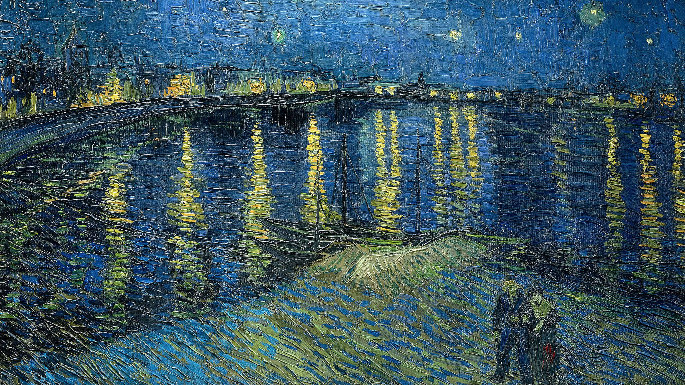

- 
Vincent van Gogh
Vincent Willem van Gogh (Zundert, 30. ožujka 1853. - Anvers-sur-Oise, 29. srpnja 1890.) nizozemski slikar, grafičar i crtač; postimpresionist koji se smatra jednim od najslavnijih i najutjecajnijih osoba u povijesti umjetnosti Zapada.
Sedam je godina proživio kao namještenik u Haagu, a zatim je poslan u podružnicu Goupila u London (1873-76). U toj je trgovini slika dobio ne samo uvid u slikarstvo, već se i sam zainteresirao za slikanje te nastojao postati slikar. Prvi Van Goghovi crteži nastaju pod utjecajem idealista Milleta u Belgiji. 1881. upoznaje se sa slikarom Mauveom, a taj ga poznati slikar bodri, upućuje i prvi mu daje savjete kako bi trebao postupiti likovnim rješavanjima. Nakon kratkog boravka u Haagu odlazi u Brabant. U njegovom se likovnom izrazu tada počinje sve više i sve jasnije stavljati značajna crta humanitarne zanesenosti. Gogh se strastveno obraća prikazivanju života seljaka i radnika, koji se pate i muče na svojoj zemlji, da bi joj u svojoj bijedi istrgli nasušni hljeb.
POGLEDAJTE JOŠ

Salvador Dali

Gustav Klimt